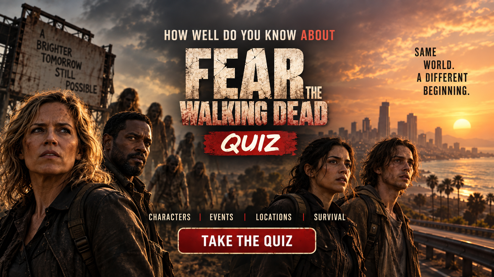

Think you know the survivors, communities, factions, locations and major events of Fear the Walking Dead? Test your knowledge and see how much of the series you really remember.


About Fear the Walking Dead Quiz
Think you know everything about Fear the Walking Dead? Put your knowledge to the test with this 50-question trivia quiz.
The questions cover characters, communities, locations, factions, occupations, relationships and memorable events from the television series.
Each question has four possible answers. A correct answer gives you 2 points, while an incorrect answer gives you 0 points. The maximum possible score is 100.
Frequently Asked Questions
How does the Fear the Walking Dead quiz work?
You will face 50 questions about Fear the Walking Dead. Each question has four possible answers, but only one answer is correct.
What is the maximum score?
The maximum score is 100 points. Every correct answer is worth 2 points.
What does my score mean?
Your score represents how well you remember the series, including its characters, communities, factions, locations and major events.
What topics are covered?
The quiz covers characters, communities, locations, factions, occupations, relationships and memorable events from across Fear the Walking Dead.
Does the quiz cover the whole series?
The questions cover a broad range of characters, events and locations from across the television series.
Can I take the quiz again?
Yes. Select TRY AGAIN after finishing the quiz to replay it and try for a higher score.
Can I challenge my friends?
Yes. Use the Challenge Your Friends button after completing the quiz and see if they can beat your score.